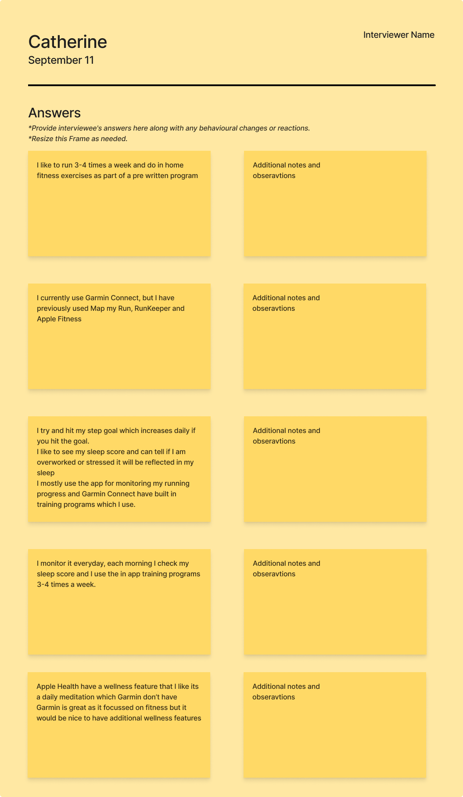
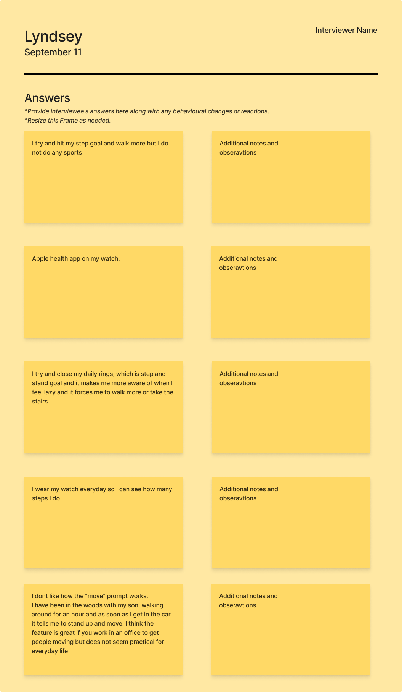
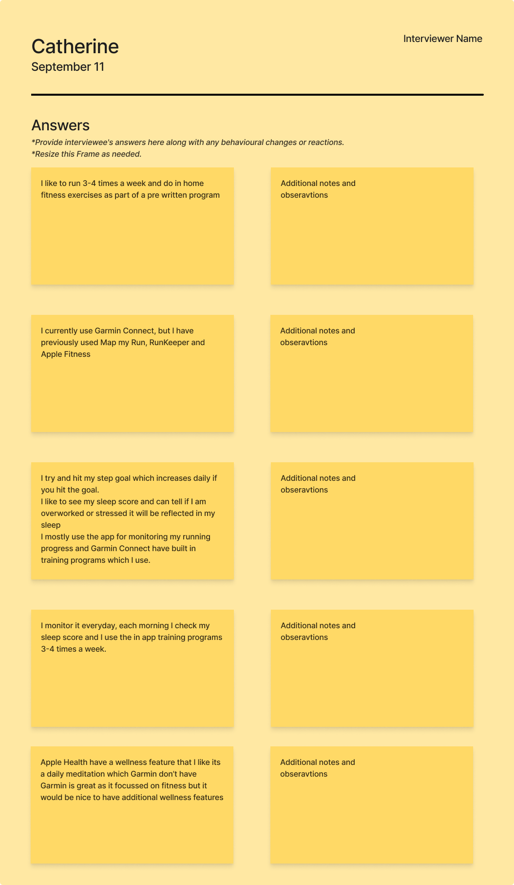
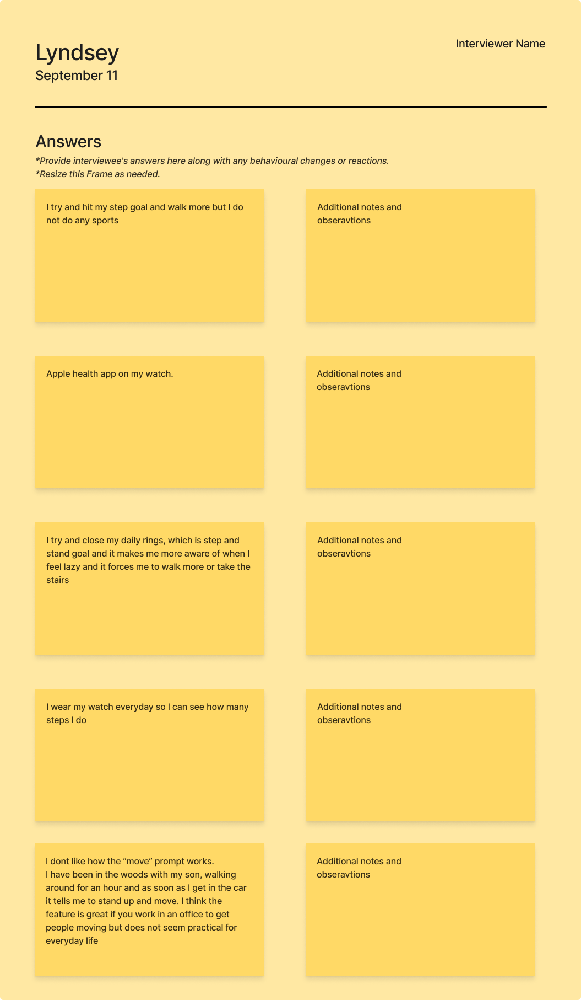

Product Research
Product research was conducted to evaluate how a product might fit in the market, learn about the competition and determine what would make this product stand out. What do customers really want? What would succeed in the current market
 



Persona Research
User research was conducted to understand user behaviors, needs and motivations through observation techniques and task analysis.
The Goals
- WHO am I designing for?
- WHAT are their goals?
- WHY will they use your app?
- WHERE, WHEN and HOW do they perform tasks?
- What are the PROBLEMS with the current way they complete their tasks?
Interviews
I identified my primary and secondary users and conducted interviews to provide sufficient information to create two types of Personas
Personas
Student Persona
"Alex is a 35-year-old marketing manager with a passion for exploring new hobbies. Over the years, he’s dabbled in various activities like guitar, photography, and tennis. However, between a full-time job as a manager, he struggles to make time for consistent practice or find a tutor that offers the right flexibility. He’s looking for an app that helps him learn at his own pace, “dip in and dip out” when he has the time and inclination, offering guidance and structure to get better at his chosen hobby, whether it's sport, art, or music."
Tutor Persona
"Samantha is a dedicated yoga instructor with over eight years of experience. She teaches both in-person and virtual classes, offering personalized sessions that focus on her students' physical and mental well-being. She has built her client base through word of mouth, social media, and yoga studios, but she's eager to expand her reach using an all-in-one tutoring platform. Samantha is passionate about helping people find peace, strength, and balance through yoga, whether in one-on-one or group sessions. "
Usability Testing
I conducted usability testing with the prototype, observing user interactions and gathering feedback.
Observations
I conducted usability testing with the prototype, observing user interactions and gathering feedback. Below is a list of observations from the usability tests.
- Observation 1: Users found the step tracking feature intuitive.
- Observation 2: The navigation could be simplified for quicker access to key features.
- Observation 3: Users appreciated the customization options available in settings.